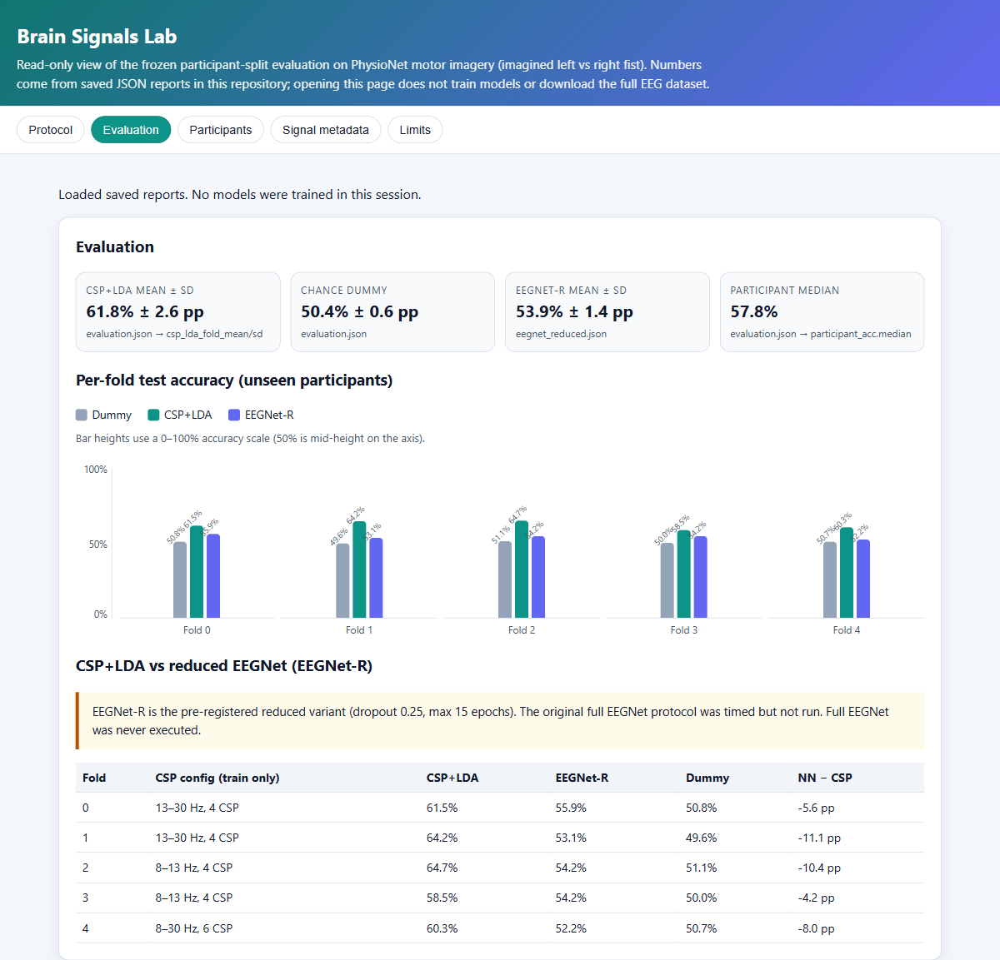

Brain Signals Lab
Participant-held-out EEG motor imagery on public PhysioNet data.
- 50 participants · 5 frozen outer folds
- CSP+LDA mean 61.8% (2.6 pp fold spread) vs dummy baseline 50.4% (0.6 pp)
Deliberate choice: ship saved JSON reports and a read-only viewer so recruiters inspect folds without retraining or downloading raw EEG.
Limitation: one classical pipeline on one subset—engineering results only, not clinical or neuroscience claims.
Try this: in the viewer, open Participants and filter below chance.
Implementation used AI coding assistance; limits and data citation are in the project README.
